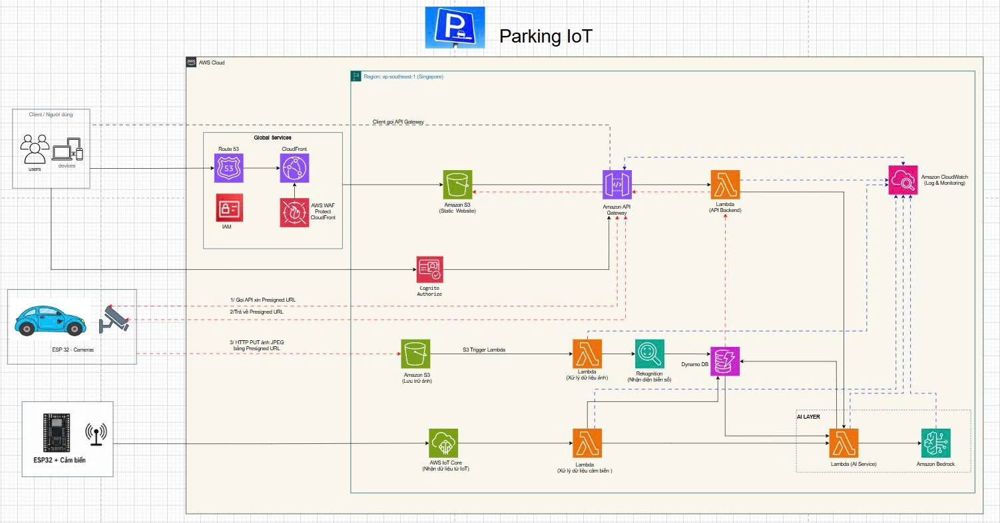

Giải pháp AWS Serverless cho giám sát bãi đỗ xe, nhận diện biển số và hỗ trợ AI
Dự án nhằm xây dựng hệ thống Parking IoT thông minh giúp tự động hóa quá trình giám sát bãi đỗ xe, nhận diện phương tiện và quản lý dữ liệu theo thời gian thực. Hệ thống sử dụng các thiết bị IoT như ESP32 Camera và ESP32 cảm biến để thu thập hình ảnh xe ra/vào, trạng thái vị trí đỗ và dữ liệu từ bãi xe.
Dữ liệu từ thiết bị được gửi lên AWS thông qua các dịch vụ như AWS IoT Core, Amazon S3, Amazon API Gateway và được xử lý bằng AWS Lambda. Hình ảnh phương tiện được lưu trữ trong Amazon S3, sau đó kích hoạt Lambda để xử lý ảnh và gọi Amazon Rekognition nhằm nhận diện biển số xe. Kết quả nhận diện và dữ liệu cảm biến được lưu vào Amazon DynamoDB để phục vụ việc tra cứu, quản lý và hiển thị trên Web/App.
Ngoài ra, hệ thống còn tích hợp Amazon Bedrock thông qua lớp Lambda AI Service để hỗ trợ phân tích dữ liệu, trả lời các truy vấn thông minh và cung cấp trải nghiệm quản lý bãi đỗ xe hiện đại hơn. Với kiến trúc AWS Serverless, hệ thống có khả năng mở rộng linh hoạt, giảm chi phí vận hành và không cần quản lý máy chủ truyền thống.
Các bãi đỗ xe truyền thống thường gặp nhiều hạn chế trong quá trình vận hành và quản lý. Việc kiểm soát xe ra/vào còn phụ thuộc nhiều vào con người, dễ xảy ra sai sót khi ghi nhận biển số, thời gian vào bãi hoặc trạng thái chỗ đỗ. Khi số lượng phương tiện tăng lên, việc quản lý thủ công sẽ trở nên khó khăn, thiếu tính chính xác và mất nhiều thời gian.
Một số vấn đề chính có thể kể đến như:
Dự án đề xuất xây dựng hệ thống Parking IoT thông minh trên nền tảng AWS Serverless. Hệ thống sử dụng ESP32 Camera để chụp ảnh xe ra/vào, ESP32 cảm biến để ghi nhận trạng thái chỗ đỗ, sau đó gửi dữ liệu lên AWS để xử lý và lưu trữ tập trung.
Giải pháp bao gồm các chức năng chính:
Hệ thống giúp giảm thao tác thủ công, tăng độ chính xác trong quản lý bãi xe, hỗ trợ giám sát theo thời gian thực và tạo nền tảng dữ liệu phục vụ phân tích AI trong tương lai. Nhờ sử dụng kiến trúc Serverless, hệ thống có thể mở rộng linh hoạt theo số lượng thiết bị, số lượng xe và nhu cầu sử dụng thực tế.
Hệ thống áp dụng kiến trúc AWS Serverless nhằm giảm chi phí quản lý hạ tầng, tăng khả năng mở rộng và dễ dàng tích hợp với các dịch vụ AI, IoT và cơ sở dữ liệu trên AWS.

Người dùng truy cập hệ thống thông qua trình duyệt web hoặc thiết bị di động. Website được lưu trữ trên Amazon S3 Static Website và phân phối thông qua Amazon CloudFront. Route 53 đảm nhiệm vai trò quản lý tên miền, còn AWS WAF giúp bảo vệ hệ thống khỏi các truy cập không hợp lệ.
Luồng xử lý:
Người dùng → Route 53 → CloudFront → AWS WAF → Amazon S3 Static Website → API Gateway → Lambda Backend → DynamoDB
Trong đó:
Hệ thống sử dụng Amazon Cognito để xác thực người dùng trước khi cho phép truy cập vào các chức năng quản lý. Người dùng có thể đăng nhập bằng tài khoản đã được cấp. Sau khi đăng nhập thành công, Cognito cấp token để Web/App gửi kèm trong các request đến API Gateway.
Luồng xử lý:
Người dùng → Amazon Cognito → API Gateway → Lambda Backend → DynamoDB
Trong đó:
Khi có xe đi vào hoặc đi ra bãi đỗ, ESP32 Camera sẽ chụp ảnh phương tiện. Thay vì upload ảnh trực tiếp qua Lambda, thiết bị sẽ xin Presigned URL từ API Gateway. Sau đó ESP32 Camera dùng URL này để upload ảnh JPEG trực tiếp lên Amazon S3.
Cách làm này giúp giảm tải cho Lambda, tăng hiệu quả upload ảnh và phù hợp với kiến trúc AWS.
Luồng xử lý:
ESP32 Camera → API Gateway → Lambda Backend → Presigned URL → ESP32 Camera upload ảnh lên S3 → S3 Trigger Lambda → Amazon Rekognition → DynamoDB
Các bước chi tiết:
Ví dụ dữ liệu ảnh được lưu:
{
"image_id": "car_001.jpg",
"plate_number": "51A-12345",
"direction": "in",
"timestamp": "2026-04-27T10:30:00",
"s3_url": "s3://parking-image-bucket/car_001.jpg"
}
ESP32 cảm biến được dùng để phát hiện trạng thái của từng vị trí đỗ xe. Cảm biến có thể là cảm biến siêu âm, hồng ngoại hoặc cảm biến từ, tùy theo thiết kế thực tế. Dữ liệu cảm biến được gửi lên AWS IoT Core bằng giao thức MQTT.
Luồng xử lý:
ESP32 cảm biến → AWS IoT Core → Lambda xử lý dữ liệu cảm biến → DynamoDB
Các bước chi tiết:
Ví dụ dữ liệu cảm biến:
{
"slot_id": "A01",
"status": "occupied",
"timestamp": "2026-04-27T10:30:00"
}
Trong đó:
slot_id: Mã vị trí đỗ xe.status: Trạng thái vị trí đỗ, ví dụ available hoặc occupied.timestamp: Thời gian ghi nhận dữ liệu.Hệ thống tích hợp lớp AI để hỗ trợ người dùng và quản trị viên truy vấn dữ liệu bãi đỗ xe bằng ngôn ngữ tự nhiên. Web/App gửi câu hỏi đến API Gateway, sau đó Lambda AI Service xử lý yêu cầu, lấy dữ liệu từ DynamoDB nếu cần và gọi Amazon Bedrock để tạo phản hồi.
Luồng xử lý:
Web/App → API Gateway → Lambda AI Service → Amazon Bedrock → DynamoDB → Web/App
Các chức năng AI có thể hỗ trợ:
Ví dụ câu hỏi:
Hiện tại còn bao nhiêu chỗ trống trong bãi xe?
Ví dụ phản hồi:
Hiện tại bãi xe còn 12 chỗ trống, trong đó khu A còn 5 chỗ và khu B còn 7 chỗ.
Amazon CloudWatch được sử dụng để ghi log và giám sát hoạt động của các dịch vụ trong hệ thống. CloudWatch có thể nhận log từ Lambda, API Gateway, IoT Core và các thành phần xử lý dữ liệu.
Luồng giám sát:
API Gateway / Lambda / IoT Core / Rekognition / DynamoDB → CloudWatch
CloudWatch giúp:
Trong giai đoạn đầu, nhóm thực hiện khảo sát yêu cầu hệ thống và xác định phạm vi triển khai. Các công việc chính bao gồm:
Giai đoạn này tập trung vào việc cấu hình và kiểm thử thiết bị ESP32.
Các công việc chính:
Backend của hệ thống được xây dựng bằng các dịch vụ serverless của AWS.
Các công việc chính:
Giao diện Web/App giúp người dùng và quản trị viên theo dõi trạng thái bãi đỗ xe.
Các chức năng chính:
Giai đoạn cuối tập trung vào việc tích hợp AI và hoàn thiện hệ thống giám sát.
Các công việc chính:
Chi phí triển khai hệ thống Parking IoT phụ thuộc vào số lượng thiết bị, số lượng ảnh xử lý, số request API, dung lượng lưu trữ ảnh và mức độ sử dụng AI.
| Hạng mục | Số lượng | Mục đích sử dụng |
|---|---|---|
| ESP32 Camera | Theo số cổng ra/vào | Chụp ảnh xe và biển số |
| ESP32 cảm biến | Theo số vị trí đỗ | Gửi trạng thái chỗ đỗ |
| Cảm biến siêu âm / hồng ngoại | Theo số vị trí đỗ | Phát hiện xe tại vị trí đỗ |
| Nguồn điện | Theo thiết bị | Cấp nguồn cho ESP32 |
| Dây nối, hộp bảo vệ | Theo nhu cầu | Bảo vệ thiết bị khi lắp đặt |
| Router / WiFi | 1 hoặc nhiều | Kết nối thiết bị với Internet |
Các dịch vụ AWS có thể phát sinh chi phí bao gồm:
| Dịch vụ AWS | Mục đích sử dụng |
|---|---|
| AWS IoT Core | Nhận dữ liệu MQTT từ ESP32 cảm biến |
| Amazon S3 | Lưu trữ ảnh xe |
| AWS Lambda | Xử lý backend, xử lý ảnh và dữ liệu cảm biến |
| Amazon API Gateway | Nhận request từ Web/App và thiết bị |
| Amazon Rekognition | Phân tích hình ảnh, hỗ trợ nhận diện biển số |
| Amazon DynamoDB | Lưu dữ liệu xe, biển số, trạng thái chỗ đỗ |
| Amazon CloudFront | Phân phối giao diện website |
| Amazon Cognito | Xác thực và quản lý người dùng |
| Amazon CloudWatch | Ghi log và giám sát hệ thống |
| Amazon Bedrock | Hỗ trợ chức năng AI nâng cao |
| AWS Budgets | Theo dõi và cảnh báo chi phí |
Đối với mô hình demo hoặc triển khai quy mô nhỏ, chi phí có thể được kiểm soát bằng cách giới hạn số lượng ảnh xử lý, giảm thời gian lưu ảnh trên S3, tối ưu số lần gọi API Gateway và chỉ sử dụng Amazon Bedrock khi cần thiết.
| Rủi ro | Mức độ | Chiến lược giảm thiểu |
|---|---|---|
| ESP32 mất kết nối mạng | Trung bình | Lưu tạm dữ liệu cục bộ và gửi lại khi có mạng |
| Ảnh biển số bị mờ | Cao | Điều chỉnh góc camera, ánh sáng và khoảng cách chụp |
| Nhận diện biển số sai | Trung bình | Kết hợp kiểm tra thủ công và cải thiện chất lượng ảnh |
| Thiết bị bị hỏng do môi trường | Trung bình | Dùng hộp bảo vệ, kiểm tra định kỳ thiết bị |
| API Gateway hoặc Lambda bị lỗi | Trung bình | Theo dõi log bằng CloudWatch và xử lý lỗi |
| Vượt chi phí AWS | Trung bình | Thiết lập AWS Budgets và cảnh báo chi phí |
| Dữ liệu bị truy cập trái phép | Cao | Dùng Cognito, IAM, WAF và phân quyền chặt chẽ |
| Hệ thống khó mở rộng | Thấp | Thiết kế serverless, dễ thêm thiết bị và dịch vụ |
Sau khi hoàn thành, hệ thống dự kiến đạt được các kết quả sau:
Hệ thống giúp quá trình quản lý bãi đỗ xe trở nên tự động và hiệu quả hơn. Người quản lý có thể theo dõi trạng thái bãi xe từ xa, kiểm tra lịch sử xe ra/vào và giảm phụ thuộc vào thao tác thủ công.
Các lợi ích vận hành gồm:
Dự án Parking IoT thông minh sử dụng AWS Serverless là giải pháp phù hợp để hiện đại hóa việc quản lý bãi đỗ xe. Hệ thống kết hợp các công nghệ IoT, xử lý ảnh, lưu trữ dữ liệu, xác thực người dùng và trí tuệ nhân tạo nhằm tạo ra một nền tảng quản lý bãi xe tự động, linh hoạt và có khả năng mở rộng.
Với các dịch vụ như AWS IoT Core, Amazon S3, AWS Lambda, Amazon API Gateway, Amazon Rekognition, Amazon DynamoDB, Amazon Cognito, Amazon CloudFront, AWS WAF, Amazon CloudWatch và Amazon Bedrock, hệ thống có thể đáp ứng tốt các yêu cầu về giám sát thời gian thực, nhận diện biển số, quản lý người dùng và phân tích dữ liệu thông minh.
Dự án không chỉ giúp giải quyết các hạn chế của mô hình quản lý bãi xe thủ công mà còn tạo nền tảng để phát triển các chức năng nâng cao trong tương lai như dự báo mật độ xe, tối ưu vị trí đỗ, cảnh báo bất thường và hỗ trợ quản lý bằng AI.